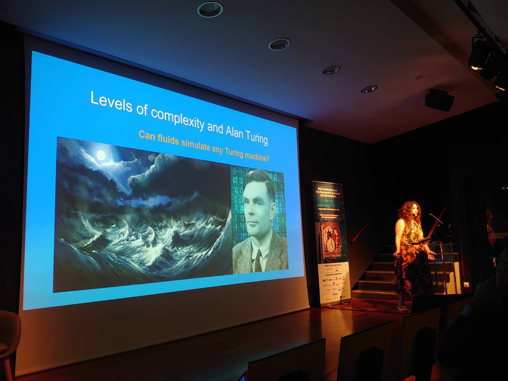
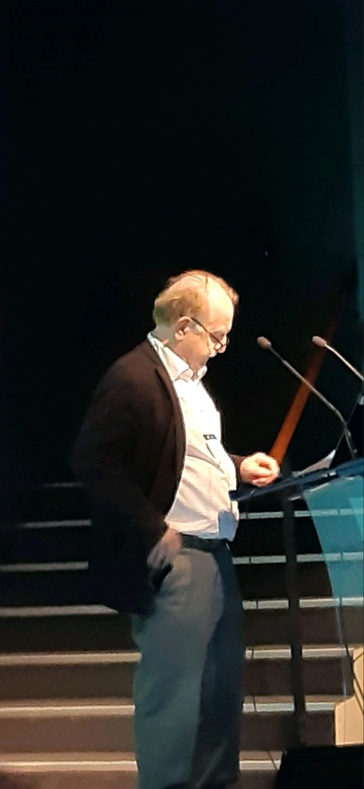
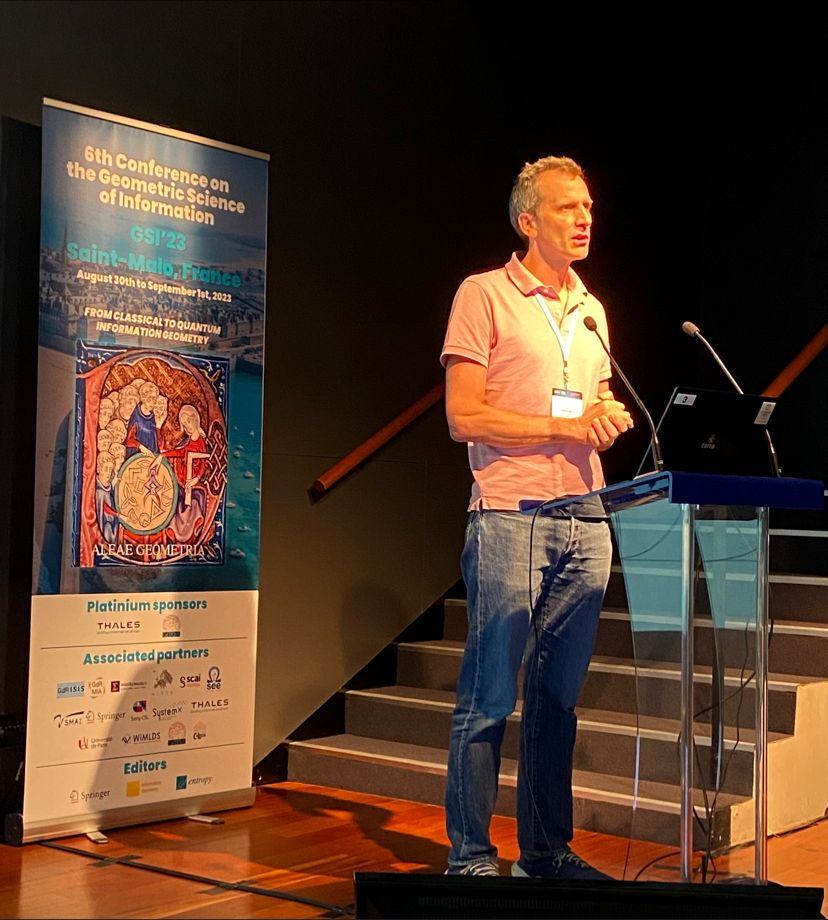
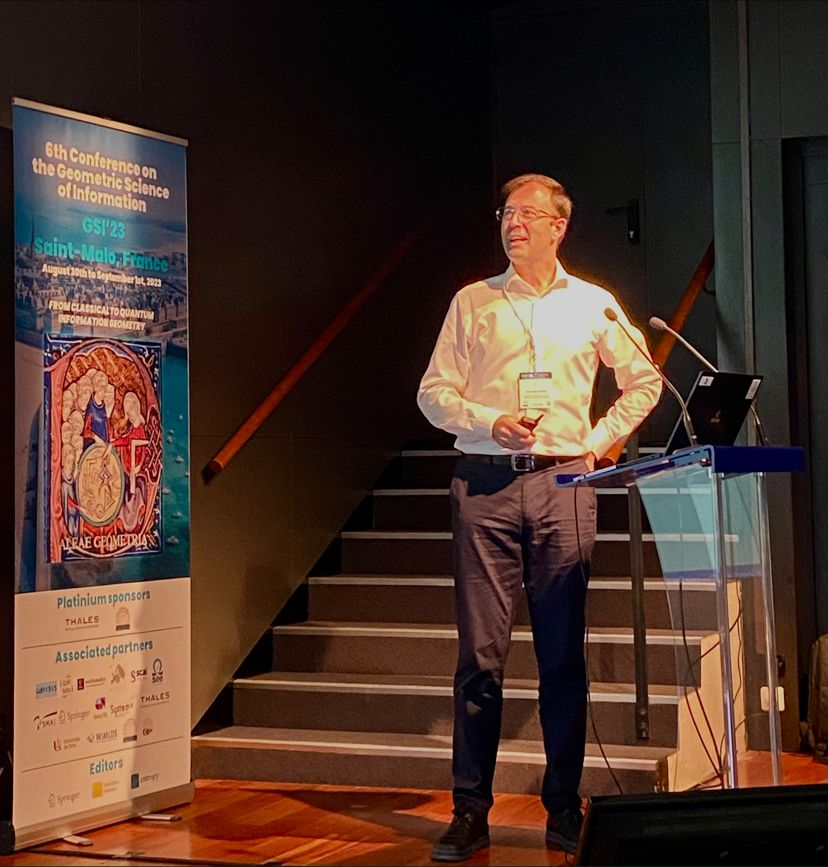
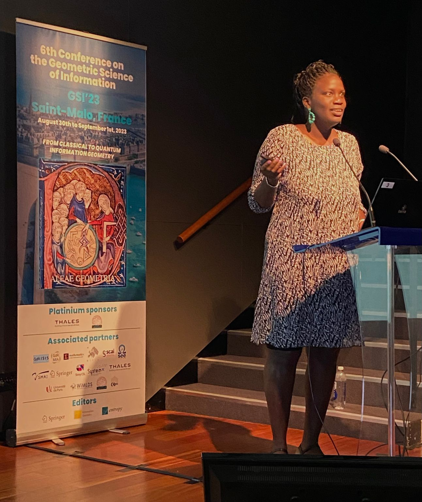
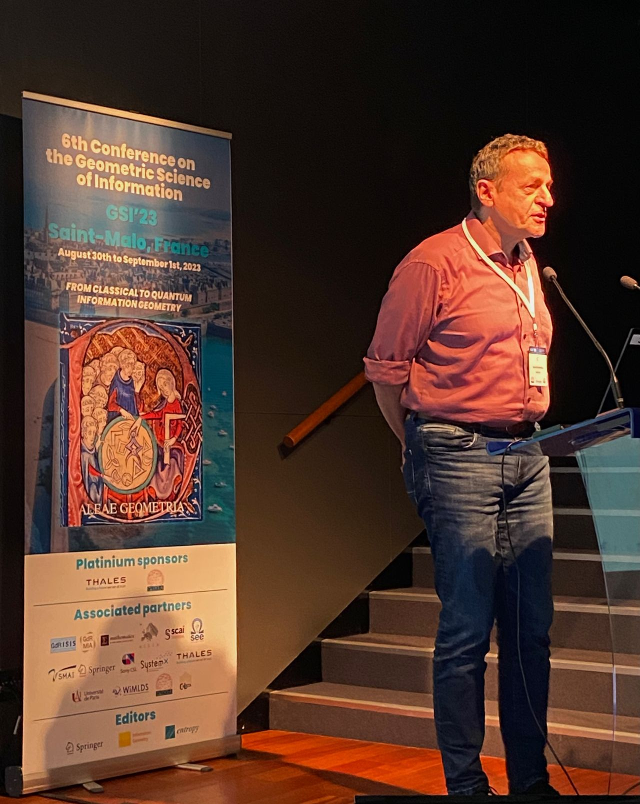

Video of Geometric Science of Information (GSI'23)
GSI'23 video
Keynote speakers
YouTube videos (about 1 hour including Q & As):
- Eva Miranda:
From Alan Turing to Contact geometry: towards a "Fluid computer"

video
- Hervé Sabourin:
Transverse Poisson Structures to adjoint orbits in a complex semi-simple Lie algebra

video
- Francis Bach:
Information Theory with Kernel Methods

video
- Juan-Pablo Ortega:
Learning of Dynamic Processes

video
- Diarra Fall:
Statistics Methods for Medical Image Processing and Reconstruction

video
- Bernd Sturmfels:
Algebraic Statistics and Gibbs Manifolds
Special GSI'23 issue in Information Geometry: Gibbs manifolds

video
Regular talks
... in progress ...
- A historical perspective on Schützenberger-Pinsker inequalities by Olivier Rioul:
video
- Fisher-Rao and pullback Hilbert cone distances on the multivariate Gaussian manifold with applications to simplification and
quantization of mixtures by Frank Nielsen:
video
- On the f-divergences between hyperboloid and Poincaré distributions by Frank Nielsen and Kazuki Okamura:
video
- Quasi-arithmetic centers, quasi-arithmetic
mixtures, and the Jensen-Shannon ∇-divergences by Frank Nielsen:
video